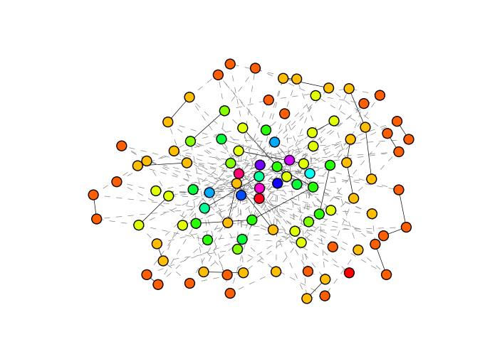
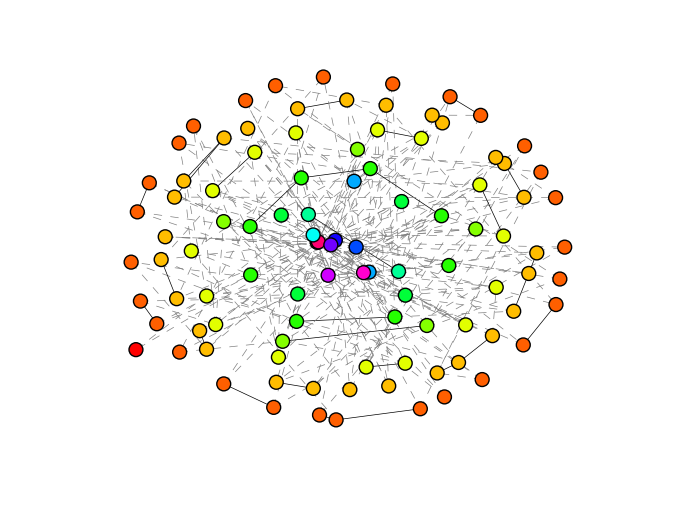

Examples¶
Robustness Comparison¶
1 2 3 4 5 6 7 8 9 10 11 12 13 14 15 16 17 18 19 20 21 22 23 24 25 26 27 28 29 30 31 32 33 34 35 36 37 38 39 40 41 42 43 44 45 46 47 48 49 50 51 52 53 54 55 56 57 58 59 60 61 62 63 64 65 66 67 68 69 70 71 72 73 74 75 | from __future__ import division
import networkx as nx
from robust_graph import LOG_LEVEL_INFO as LOG_LEVEL
# s robustness
from robust_graph import R, s
# compare three algorithm
from robust_graph import Schneider
from robust_graph import WuHolme
from robust_graph import IchinoseSatotani
# useful to build graph in the paper,
# [Onion structure and network robustness]
from robust_graph import scale_free_network
# base class to optimize graph robustness
from robust_graph import Optimizer
# this optimization algorithm does nothing
# so we can calculate original graph's s(q)
class Original(Optimizer):
def _update_one_step(self, graph):
return True, graph
n_nodes = 100
n_graphs = 10
n_attacks = 10
filename = 'robustness_comparison.csv'
# optimizer dictionary (column -> (opt_class, log_level, force_update,
# configs, steps))
optimizers = {
'Original' : (Original, LOG_LEVEL, True,
dict(), 1),
'Schneider' : (Schneider, LOG_LEVEL, True,
dict(max_trials=100), 100),
'Holme' : (WuHolme, LOG_LEVEL, True,
dict(), 1),
'Ichinose' : (IchinoseSatotani, LOG_LEVEL, False,
dict(greedy=True), 100)
}
result_s = dict(zip(optimizers.keys(),
[[0]*n_nodes]*len(optimizers)))
for _ in range(n_graphs):
# build graph and optimize with each algorithm
G = scale_free_network(n_nodes)
for name, params in optimizers.items():
opt_cls, log_level, force_update, config, steps = params
optimizer = opt_cls(G, log_level, force_update, **config)
optimized = optimizer.optimize(steps)
# the following three lines do:
# s[name] += s(optimized) * n_attacks
result_s[name] = map(sum,
zip(result_s[name],
map(lambda e: e*n_attacks, s(optimized, n=n_attacks))))
# convert result_s sum of s(q) -> average of s(q)
for k, v in result_s.items():
result_s[k] = map(lambda s: s / (n_graphs*n_attacks), v)
# build csv text with header column (q)
csvtxt = 'q,'+','.join(result_s.keys()) + '\n' +\
'\n'.join(map(lambda l: '%d,'%l[0]+','.join(map(str, l[1])),
enumerate(zip(*result_s.values()), 1)
))
with open(filename, 'w') as fp:
fp.write(csvtxt)
|
Speed Comparison¶
1 2 3 4 5 6 7 8 9 10 11 12 13 14 15 16 17 18 19 20 21 22 23 24 25 26 27 28 29 30 | from robust_graph import R
from robust_graph import LOG_LEVEL_INFO as LOG_LEVEL
from robust_graph import TimeTracker
# compare two algorithms
from robust_graph import Schneider, IchinoseSatotani
# function to load US airline network
from robust_graph.util import load_us
# some important constants
n_attacks = 10
n_steps = 100
fileprefix = 'speed_test'
graph = load_us()
# define columns in csv
columns = [
# R robustness
('R', lambda G: R(G, n_attacks))
]
for params in [(Schneider, dict(log_level=LOG_LEVEL, force_update=True)),
(IchinoseSatotani, dict(log_level=LOG_LEVEL,
force_update=False,
greedy=True))]:
opt_cls, config = params
tracker = TimeTracker(opt_cls, graph, columns,**config)
tracker.track(steps=n_steps)
tracker.dump(fileprefix + '.' + opt_cls.__name__ + '.csv')
|
Robustness vs Degree Correlation¶
1 2 3 4 5 6 7 8 9 10 11 12 13 14 15 16 17 18 19 20 21 22 23 24 25 26 27 28 29 30 | import networkx as nx
from robust_graph import R
from robust_graph import LOG_LEVEL_INFO as LOG_LEVEL
from robust_graph import TimeTracker
# an algorithm
from robust_graph import IchinoseSatotani
# function to load US airline network
from robust_graph import load_us
# some important constants
n_attacks = 10
n_steps = 100
filename = 'Randr.csv'
graph = load_us()
# define columns in csv
columns = [
# R robustness
('R', lambda G: R(G, n_attacks)),
# r degree correlation
('r', nx.degree_pearson_correlation_coefficient)
]
# use TimeTracker to track R and r
tracker = TimeTracker(IchinoseSatotani, graph, columns,
log_level=LOG_LEVEL, force_update=False, greedy=True)
tracker.track(steps=n_steps)
tracker.dump(filename)
|
Drawing Onion Structure¶
1 2 3 4 5 6 7 8 9 10 | from networkx import star_graph
from networkx.drawing import spring_layout
from robust_graph.util import scale_free_network
from robust_graph.util import save_graph_as_image
G = scale_free_network(n=100, gamma=2.5, avrdeg=8)
save_graph_as_image(G, 'onion_layout.png')
save_graph_as_image(G, 'spring_layout.png', spring_layout)
|
The results shold be

spring_layout.png
and

onion_layout.png
Small Test Code¶
This script tests
- 4 types of algorithms
OptimizerandTimeTracker
1 2 3 4 5 6 7 8 9 10 11 12 13 14 15 16 17 18 19 20 21 22 23 24 25 26 27 28 29 30 31 32 33 34 35 36 37 38 39 40 41 42 43 44 45 46 47 48 | from __future__ import print_function
import sys, networkx as nx
# robust measurement by schneider et.al.
from robust_graph import s, R
# log level: what kind of information are to be printed
# other options: VERBOSE, DEBUG, INFO, WARNING, ERROR
# e.g. WARNING: print warning and error information
from robust_graph import LOG_LEVEL_QUIET as LOG_LEVEL
# 4 optimizers based on 4 different algorithms
from robust_graph import Schneider, WuHolme, Sun, IchinoseSatotani
# measures certain index through optimization process
from robust_graph import TimeTracker
# function to load united states airline network
# and make powerlaw-degree-distribution network
from robust_graph import load_us, scale_free_network
# initialize graph object and algorithm object
G1 = scale_free_network()
R1 = R(G1, n=10) # calculate 10 times to get more accurate result
# use of optimizer
print('----- optimizer test -----')
print('original R =', R1)
for opt_cls in [Schneider, WuHolme, IchinoseSatotani, Sun]:
# still there are more options
# see robust_graph/optimize document
optimizer = opt_cls(G1, log_level=LOG_LEVEL, max_trials=10)
G2 = optimizer.optimize(steps=1)
R2 = R(G2, n=10)
print('optimized by', opt_cls.__name__, 'R =', R2)
# use of tracker
print('----- time tracker test -----')
# measurements used in timetracker
cols = [('R', lambda G: R(G, n=10)), # R robustness
('r', nx.degree_pearson_correlation_coefficient), # r degree correlation
]
# WuHolme is not iterative algorithm
for opt_cls in [Schneider, IchinoseSatotani]:
# options are given after columns(measurements)
tracker = TimeTracker(opt_cls, G1, cols=cols,
log_level=LOG_LEVEL, max_trials=5)
tracker.track(steps=2)
print('tracked by', opt_cls.__name__, 'algorithm...')
print(tracker.dumps())
# tracker.dump('test.csv') # also, tracker can dump to file
|